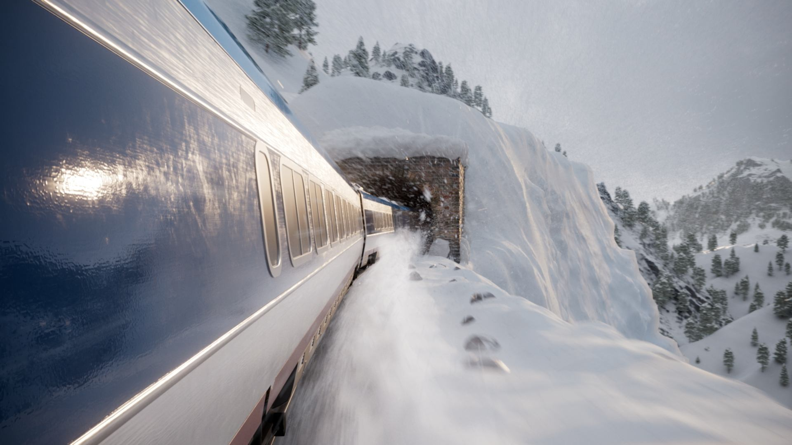

The Mill NY x SCAD
| Brief : Create a photorealistic advertisement for a vehicle within 10 weeks |
| Tools: Houdini, Nuke, Maya, Substance Painter, Speedtree, Redshift |
| Team Members : Anh Phan, Davis Hardy, Ethan Nasiff, Tempest Oh Supervising Professors: Bridget Gaynor & Deborah Fowler Mill Mentors: David Barosin, Emily Meger, Heather Keister, Jake Martin, JoonHo Bang, Mazyar Sharifian, Natasha Saenko, Stephen Eisenmann, Stephen Withers, Varshini Kumar, Vi Nguyen |
Overview
Over the course of 10 weeks, our team conceptualized, refined, and delivered a mock advertisement for Amtrak. The Amtrak logo was later replaced by a fictitious brand "Okolona".
Story
Despite our non-existent relationship with Amtrak, we wanted to tell a story that the brand may want to tell someday. We decided to tell create a piece that shows how Amtrak rides can take riders though picturesque areas of the United States on their journey.
Contribution
Most of my contributions to this piece were in our winter shot.
In order to capture the mountainous environment, I looked at references of Donner Pass near Lake Tahoe, CA. We looked at decommissioned train tunnels that are littered around the area to inform our layout and camera positioning. Movies such as Bullet Train and Solo: A Star Wars Story helped to inform camera placement.
I utilized DEM (satellite data) to create the mountains in the background. All trees were created by Tempest via Speedtree. Anh added snow to the trees via a Sidefx Labs node after pro
Process
While I was completing layout, I created FX test using POP's in Houdini.
If you'd like to learn more about my process, check out my blog posts for this project
| Column 1 | Column 2 |
|---|---|
| Cell 1 | Cell 2 |
| Cell 3 | Cell 4 |